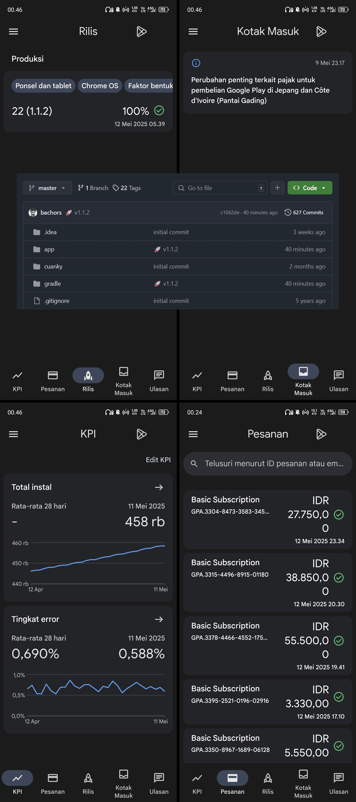
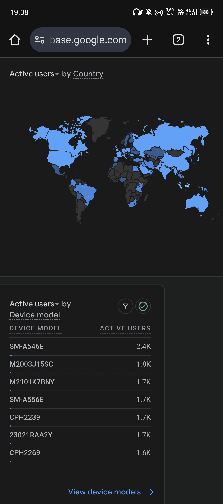
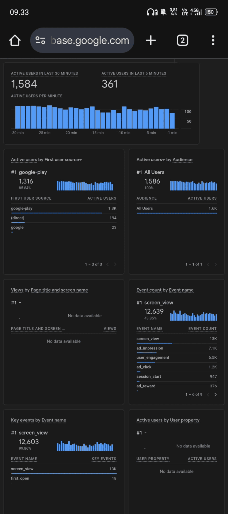
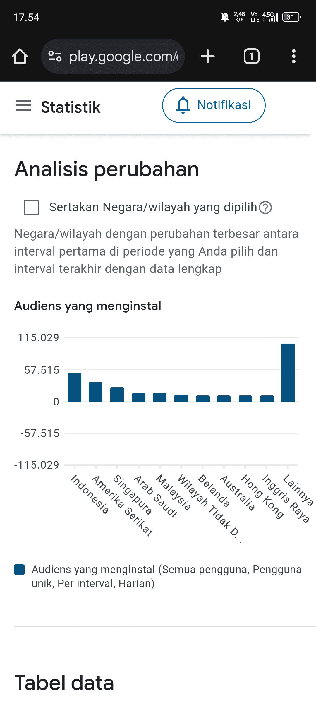
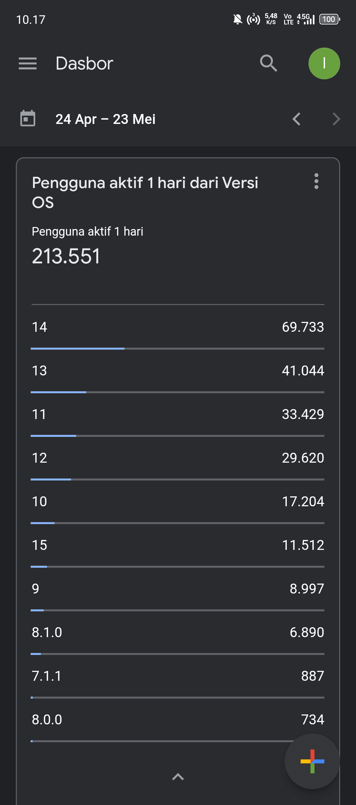
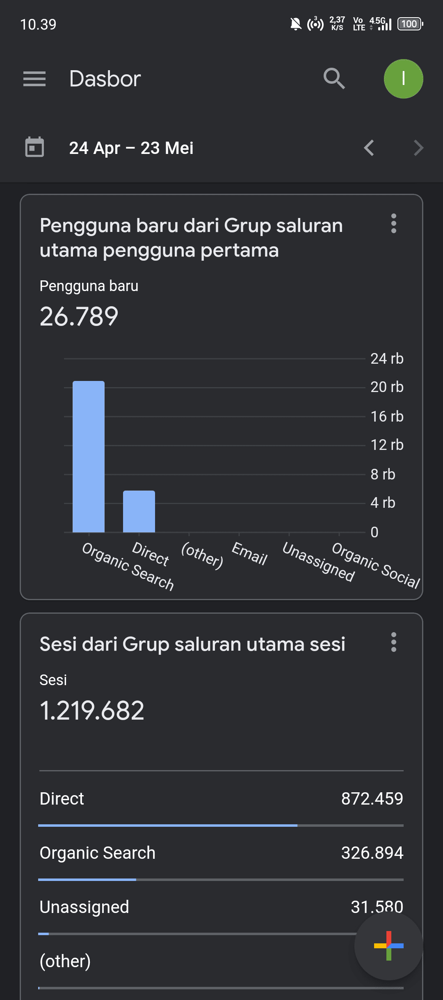
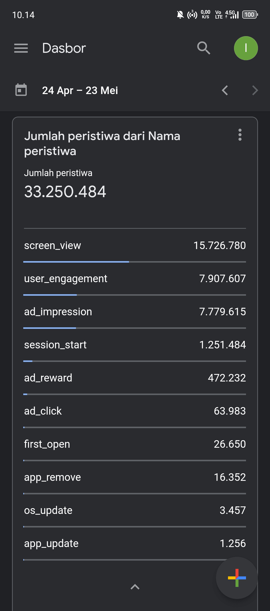
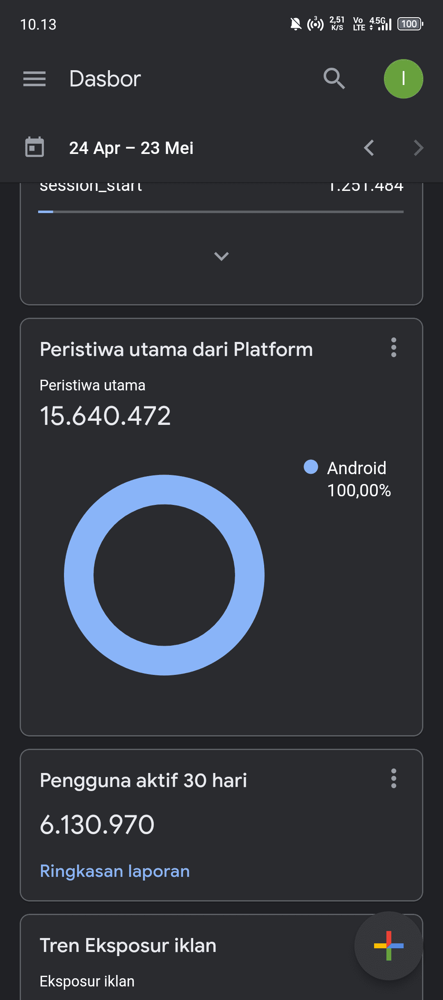

About Me
Hi! I'm Ican Bachors, a software developer from Garut with over 10 years of experience who is passionate about building web and mobile applications.
Here, you can explore a selection of my projects.
If you have any questions please don't hesitate to reach out!
My Portfolio
I am very enthusiastic in developing mobile applications and it has been my hobby till now.








My Video
Contact Me
Feel free to send me a message here: bachor.can@gmail.com, I'll try to respond as quick as I can!
You can also visit my github and social media: